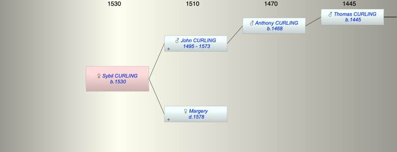

| [Index] |
| Sybil CURLING (1530 - ) |
|  |
| b. abt 1530 |
| Parents: |
| John CURLING (1495 - 1573) |
| Margery ( - 1578) |
| Siblings (3): |
| Robert CURLING (1520 - 1586) |
| Anthony CURLING (1522 - 1586) |
| William CURLING (1525 - 1582) |
| Events in Sybil CURLING (1530 - )'s life | |||||
| Date | Age | Event | Place | Notes | Src |
| abt 1530 | Sybil CURLING was born | ||||
| 1573 | 43 | Death of father John CURLING (aged 78) | St Laurence | not found | |
| 1578 | 48 | Death of mother Margery | St Laurence | bur 9 March 1578 at SL. | |
| Personal Notes: |
| Living 1573 |
| Created on a Mac™ using iFamily for Mac™ on 8 Oct 2023 |